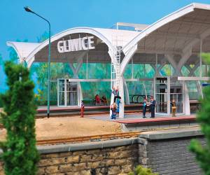
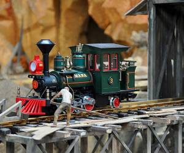

Kolejkowo to odzwierciedlenie marzeń każdego entuzjasty modelarstwa i kolejek.
Miniaturowy świat pomniejszony dwadzieścia pięć razy to tętniące życiem ulice, budynki, tory kolejowe i roślinność oraz zabytki, mosty, zbiorniki wodne i wiele więcej
Na makiecie zamieszkało ponad trzy tysiące dwieście figurek ludzi i zwierząt w tym
turystów, górników, strażaków, kierowców ciężarówek oraz oczywiście maszynistów i pazażerów kolejek.
Po Kolejkowie poruszają się nie tylko pociągi ale również samochody.

Na makiecie znajdziemy między innymi miniatury autentycznych budowli ze Śląska np.
dworca kolejowego w Gliwicach wraz z gliwickim ratuszem i kamienicami
oraz ikoniczną dla miasta radiostację mającą 4 metry wyskości wykonaną z drewna, podobnie jak oryginał.
Znajdziemy również miasteczko westernowe „Dzikie Gliwice”,
zobaczymy tam saloon, szeryfa, Indian, braci Wright przy budowie pierwszego na świecie samolotu oraz miniaturę
statku „Western River”, pływającego po Missisipi (Kolejkowo to jedyna makieta w Polsce, na której pływa statek).
Dodatkową atrakcją jest jedyna w Europie makieta z sztucznym deszczem.
Na terenie wystawy doświadczymy zmiany pory dnia i nocy
Dzień w Kolejkowie trwa 9 minut, po których następuje noc.
Zapalają się uliczne latarnie oraz światła w budynkach, dzięki czemu możemy obserwowoać życie mieszkańców w ich mieszkaniach i podglądać ich sekrety.